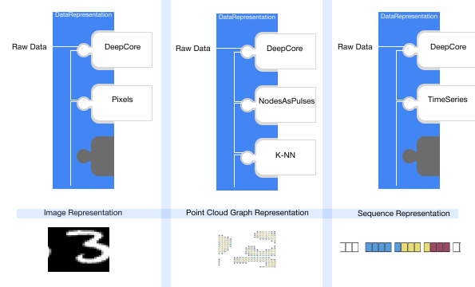

Models In GraphNeT ¶
¶
Three ideals form the philosophy behind Models in GraphNeT:
- Self-containment:
Functionality that a specific model requires (data pre-processing, transformation and other auxiliary calculations) should exist within the
Modelitself such that it is portable and deployable as a single package that only depends on data. I.eData →
Model→ Predictions- Summarizeable:
Trained Models should be fully summarizeable to configuration files, allowing you to easily distribute the results of your experimentation to other
GraphNeT users.- Reuseable:
It should be easy and intuitive to repurpose existing Models to tackle new problems or work on new physics experiments.
To help developers adhere to these ideals, GraphNeT provides structure and functionality through class inheritance of Model.
Note
A Model in GraphNeT is a LightningModule configured to recieve as input torch_geometric.data.Data objects.
If you’re unfamiliar with these terms, we recommend that you consult the Lightning and PyG documentation for details.
The Model class¶
Model is the generic base class for Models in GraphNeT, and forms the basis from which all models are expected to originate.
It comes with very few restrictions and you can therefore implement nearly any deep learning technique using GraphNeT by subclassing Model.
{kind=link}
Any subclass of Model will inherit the methods Model.to_config and Model.from_config, which allows the model to be exported as .yml files and reloaded in a different session. E.g.
model = Model(...)
model.save_config("model.yml")
You can then reconstruct the same model architecture from the .yml file:
from graphnet.models import Model
# Indicate that you `trust` the config file after inspecting it, to allow for
# dynamically loading classes references in the file.
model = Model.from_config("model.yml", trust=True)
Example of ModelConfig
You can find several pre-defined ModelConfigs under graphnet/configs/models. Below are the contents of example_energy_reconstruction_model.yml:
arguments:
architecture:
ModelConfig:
arguments:
add_global_variables_after_pooling: false
dynedge_layer_sizes: null
features_subset: null
global_pooling_schemes: [min, max, mean, sum]
nb_inputs: 4
nb_neighbours: 8
post_processing_layer_sizes: null
readout_layer_sizes: null
class_name: DynEdge
graph_definition:
ModelConfig:
arguments:
columns: [0, 1, 2]
detector:
ModelConfig:
arguments: {}
class_name: Prometheus
dtype: null
nb_nearest_neighbours: 8
node_definition:
ModelConfig:
arguments: {}
class_name: NodesAsPulses
node_feature_names: [sensor_pos_x, sensor_pos_y, sensor_pos_z, t]
class_name: KNNGraph
optimizer_class: '!class torch.optim.adam Adam'
optimizer_kwargs: {eps: 0.001, lr: 0.001}
scheduler_class: '!class graphnet.training.callbacks PiecewiseLinearLR'
scheduler_config: {interval: step}
scheduler_kwargs:
factors: [0.01, 1, 0.01]
milestones: [0, 20.0, 80]
tasks:
- ModelConfig:
arguments:
hidden_size: 128
loss_function:
ModelConfig:
arguments: {}
class_name: LogCoshLoss
loss_weight: null
prediction_labels: null
target_labels: total_energy
transform_inference: '!lambda x: torch.pow(10,x)'
transform_prediction_and_target: '!lambda x: torch.log10(x)'
transform_support: null
transform_target: null
class_name: EnergyReconstruction
class_name: StandardModel
and thus the 2. ideal outlined for models is directly addressed by simply subclassing Model. In addition, Model comes with extra functionality for saving, loading and checkpointing:
Saving, loading, and checkpointing Models¶
There are several methods for saving models in GraphNeT and each comes with its own pros and cons.
Model.save¶
You can pickle your entire model (including the state_dict) by calling the save() method:
model.save("model.pth")
You can then load this model by calling load() classmethod:
from graphnet.models import Model
loaded_model = Model.load("model.pth")
Warning
This method is rather convenient as it lets you store everything in a single file but it comes with a big caveat: it’s not version-proof. That is, if you share a pickled model with a user who runs a different version of GraphNeT than what was used to train the model, you might experience compatibility issues. This is due to how pickle serialises Python objects.
ModelConfig and state_dict¶
You can summarise your Model components and their configurations by exporting it to a .yml file.
This only captures the definition of the model, not any trained weights, but by saving the state_dict too, you have effectively saved the entire model, both definition and weights.
You can do so by:
model.save_config('model.yml')
model.save_state_dict('state_dict.pth')
You can then reconstruct your model again by building the model from the ModelConfig file and loading in the state_dict:
from graphnet.models import Model
from graphnet.utilities.config import ModelConfig
model_config = ModelConfig.load("model.yml")
model = Model.from_config(model_config) # With randomly initialised weights.
model.load_state_dict("state_dict.pth") # Now with trained weight.
Note
This method is the recommended way of storing and sharing Models.
Using checkpoints¶
Because Models in GraphNeT are PyTorch-Lightning’s LightningModules, you have the option to use the load_from_checkpoint method:
model_config = ModelConfig.load("model.yml")
model = Model.from_config(model_config) # With randomly initialised weights.
model.load_from_checkpoint("checkpoint.ckpt") # Now with trained weight.
You can find more information on checkpointing here.
The StandardModel class¶
The simplest way to define a Model in GraphNeT is through the StandardModel subclass, which provides additional functionality on top of Model.
The StandardModel consists of a series of modules - a GraphDefinition , which defines the representation of the raw data, Backbone, which defines the actual achitecture, and one or more Task which defines the problem(s) that the model needs to solve.
{kind=link}
This structure guarantees modularity and reuseability of models in GraphNeT, as these modules are interchangeable. The role of each of these model components is outlined below.
For example, the only adaptation needed to run a StandardModel made for IceCube on a different experiment — say, KM3NeT — would be to switch out the Detector component in GraphDefinition
representing IceCube with one that represents KM3NeT. Similarly, a Model developed for EnergyReconstruction
can be put to work on a different problem, e.g., DirectionReconstructionWithKappa ,
by switching out just the Task component.
components (such as instances of, e.g., the GraphDefinition, Backbone, and Task classes) along with PyTorch and PyG functionality.
All Models that are applicable to the same detector configuration, regardless of how the Models themselves are implemented, should be able to act on the same graph (torch_geometric.data.Data) objects, thereby making them interchangeable and directly comparable.
GraphDefinition, backbone & Task¶
These components are packaged in a particularly simple way in StandardModel, but they are not specific to it. That is, they can be used in any combination, and alongside more specialised PyTorch/PyG code.
{kind=link}
- GraphDefinition:
A
GraphDefinitionin GraphNeT is a data representation class, that uniquely defines how the raw data is processed and presented to the model architecture. graphs are a flexibile data representation format, which allows raw neutrino telescope data to be presented as point cloud graphs, images, sequences and more, making GraphNeT compatible with nearly all deep learning paradigms.A
GraphDefinitionis itself composed of interchangeable modules, namelyDetector,NodeDefinitionandEdgeDefinition.- Detector:
The
Detectorclass holds experiment-specific details such as sensor geometry and index column names and defines standardization functions for each variable in the raw data.- NodeDefinition:
NodeDefinitiondefines what a node (i.e. a row and its columns) represents. In charge of transforming the collection of standardized Cherenkov pulses associated with a triggered event into a node/row representation of choice. It is the choice in this module that defines if nodes/rows represents single Cherenkov pulses, DOMs, entire strings or something completely different- EdgeDefinition:
The optional
EdgeDefinitiondefines how edges are drawn between nodes in a graph, which for graph neural networks can define how information may flow in the network. Methods not requiring edges, such as CNNs or transformers can simply omit this module in theirGraphDefinition.
Note
The modularity of
GraphDefinitionensures that the only adaptation needed to run aStandardModelmade for IceCube on a different experiment — say, KM3NeT — would be to switch out theDetectorcomponent inGraphDefinitionrepresenting IceCube with one that represents KM3NeT.- Backbone:
The
Backbonedefines the actual model architecture that will be used to process the data representation, and its output is directly passed toTask. The model architecture could be based on CNNs, GNNs, transformers or any of the other established deep learning paradigms.Backboneshould be a subclass ofModel.- Task:
Different applications of deep learning in neutrino telescopes (i.e. the problems we want to solve using DL) are represented as individual detector agnostic
Tasks.A
Taskfully defines the physics problem that the model is trained to solve, and is in charge of scaling/unscaling truth values and calculation of loss. Multiple subclasses ofTaskexists, most popular of which isStandardLearnedTaskthat acts as a learnable prediction head that maps the latent output ofbackboneto the target value(s). Many instances ofStandardLearnedTaskhas been implemented in GraphNeT to tackle a wide range of supervised learning tasks, such as binary classification and energy reconstruction.Below is an example of a
StandardLearnedTaskthat defines binary classification in general:from torch import Tensor from graphnet.models.task import StandardLearnedTask class BinaryClassificationTask(StandardLearnedTask): """Performs binary classification.""" # Requires one feature, logit for being signal class. nb_inputs = 1 default_target_labels = ["target"] default_prediction_labels = ["target_pred"] def _forward(self, x: Tensor) -> Tensor: # transform probability of being muon return torch.sigmoid(x)
The class variable nb_inputs specifies the dimensions that this specific
Taskexpects it’s inputxto have. In the case ofStandardLearnedTask, a simple MLP is used to adjust the dimensions of the latent prediction frombackboneto nb_inputs._forward(self, x: Tensor), defines what theTaskdoes to the latent predictions. In this taskxwill be a [batch_size,1]-dimensional latent vector and theTasksimply returns the sigmoid of it.As such, the code in under
_forward(self, x: Tensor)defines the last steps of theModel.
Instantiating a StandardModel¶
GraphNeT comes with many pre-defined GraphDefinitions, Backbones, and Tasks components that you can simply import and use out-of-the-box.
So to get started, all you need to do is to import your choices in these components and build the model.
Below is a snippet that defines a Model that reconstructs the zenith angle with uncertainties using the GNN published by IceCube for ORCA150:
# Choice of graph representation, architecture, and physics task
from graphnet.models.detector.prometheus import ORCA150
from graphnet.models.graphs import KNNGraph
from graphnet.models.graphs.nodes import NodesAsPulses
from graphnet.models.gnn.dynedge import DynEdge
from graphnet.models.task.reconstruction import ZenithReconstructionWithKappa
# Choice of loss function and Model class
from graphnet.training.loss_functions import VonMisesFisher2DLoss
from graphnet.models import StandardModel
# Configuring the components
# Represents the data as a point-cloud graph where each
# node represents a pulse of Cherenkov radiation
# edges drawn to the 8 nearest neighbours
graph_definition = KNNGraph(
detector=ORCA150(),
node_definition=NodesAsPulses(),
nb_nearest_neighbours=8,
)
backbone = DynEdge(
nb_inputs=graph_definition.nb_outputs,
global_pooling_schemes=["min", "max", "mean"],
)
task = ZenithReconstructionWithKappa(
hidden_size=backbone.nb_outputs,
target_labels="injection_zenith",
loss_function=VonMisesFisher2DLoss(),
)
# Construct the Model
model = StandardModel(
graph_definition=graph_definition,
backbone=backbone,
tasks=[task],
)
The only change required to get this Model to work on a different integrated experiment in GraphNeT,
is to switch out the Detector-component. Similarly, the model can be repurposed to solve a completely different problem,
by switching out the Task component.
Training Syntax for StandardModel¶
Models inheriting from StandardModel in GraphNeT comes with a powerful in-built model.fit method that reduces the training of models on neutrino telescopes to a syntax that is similar to that of sklearn:
model = Model(...)
train_dataloader = DataLoader(...)
model.fit(train_dataloader=train_dataloader, max_epochs=10)
model.fit is built upon torch_lightning.Trainer.fit , and therefore accepts the same arguments,
allowing GraphNeT users to train Models with the exact same functionality but with less boilerplate code.
But because Model s in GraphNeT are PyTorch modules and fully compatible with PyTorch-Lightning, you can also choose to write your own custom training loops if needed, or use the regular PyTorch-Lightning training functionality.
The snippet above is equivalent to:
from torch_lightning import Trainer
from graphnet.training.callbacks import ProgressBar
model = Model(...)
train_dataloader = DataLoader(...)
# Configure Trainer
trainer = Trainer(
gpus=None,
max_epochs=10,
callbacks=[ProgressBar()],
log_every_n_steps=1,
logger=None,
strategy="ddp",
)
# Train model
trainer.fit(model, train_dataloader)
Adding Your Own Model¶
Model architectures in GraphNeT are ordinary pytorch torch.nn.Module‘s that inherits from the generic graphnet.models.Model class,
and they are configured to receive torch_geometric.data.Data objects as input to their forward pass.
Therefore, adding your pytorch models to GraphNeT is as easy as changing the inheritance and adjusting the input to expect Data objects.
Below is an example of a simple pytorch model
import torch
class MyModel(torch.nn.Module):
def __init__(self,
input_dim : int = 5,
output_dim : int = 10):
super().__init__()
self._layer = torch.nn.Linear(input_dim, output_dim)
def forward(self, x: torch.Tensor) -> torch.Tensor:
return self._layer(x)
Modifying this model to work in GraphNeT requires changing the inheritance to model, and configuring the input to be Data objects:
import torch
from graphnet.models import Model
from torch_geometric.data import Data
class MyGraphNeTModel(Model):
def __init__(self,
input_dim : int = 5,
output_dim : int = 10):
super().__init__()
self._layer = torch.nn.Linear(input_dim, output_dim)
def forward(self, data: Data) -> torch.Tensor:
x = data.x
return self._layer(x)
The model is then ready to be used as a backbone in StandardModel, or to be included in your own implementation.
Experiment Tracking¶
You can track your experiment using Weights & Biases by passing the WandbLogger to fit():
import os
from pytorch_lightning.loggers import WandbLogger
# Create wandb directory
wandb_dir = "./wandb/"
os.makedirs(wandb_dir, exist_ok=True)
# Initialise Weights & Biases (W&B) run
wandb_logger = WandbLogger(
project="example-script",
entity="graphnet-team",
save_dir=wandb_dir,
log_model=True,
)
# Fit Model
model = Model(...)
model.fit(
...,
logger=wandb_logger,
)
By using WandbLogger, your training and validation loss is logged and you have the full functionality of Weights & Biases available.
This means, e.g., that you can log your ModelConfig, DatasetConfig, and TrainingConfig as:
wandb_logger.experiment.config.update(training_config)
wandb_logger.experiment.config.update(model_config.as_dict())
wandb_logger.experiment.config.update(dataset_config.as_dict())
Using an experiment tracking system like Weights & Biases to track training metrics as well as artifacts like configuration files greatly improves reproducibility, experiment transparency, and collaboration. This is because you can easily recreate an previous run from the saved artifacts, you can directly compare runs with diffierent model configurations and hyperparameter choices, and share and compare your results to other people on your team. Therefore, we strongly recommend using Weights & Biases or a similar system when training and optimising models meant for actual physics use.
Example: Energy Reconstruction using ModelConfig¶
Below is a minimal example for training a GNN in GraphNeT for energy reconstruction on a small data sample in GraphNeT, using configuration files:
# Import(s)
import os
from graphnet.constants import CONFIG_DIR # Local path to graphnet/configs
from graphnet.data.dataloader import DataLoader
from graphnet.models import Model
from graphnet.utilities.config import DatasetConfig, ModelConfig
# Configuration
dataset_config_path = f"{CONFIG_DIR}/datasets/training_example_data_sqlite.yml"
model_config_path = f"{CONFIG_DIR}/models/example_energy_reconstruction_model.yml"
# Build model
model_config = ModelConfig.load(model_config_path)
model = Model.from_config(model_config, trust=True)
# Construct dataloaders
dataset_config = DatasetConfig.load(dataset_config_path)
dataloaders = DataLoader.from_dataset_config(
dataset_config,
batch_size=16,
num_workers=1,
)
# Train model
model.fit(
dataloaders["train"],
dataloaders["validation"],
gpus=[0],
max_epochs=5,
)
# Predict on test set and return as pandas.DataFrame
results = model.predict_as_dataframe(
dataloaders["test"],
additional_attributes=model.target_labels + ["event_no"],
)
# Save predictions and model to file
outdir = "tutorial_output"
os.makedirs(outdir, exist_ok=True)
results.to_csv(f"{outdir}/results.csv")
model.save_state_dict(f"{outdir}/state_dict.pth")
model.save(f"{outdir}/model.pth")
Because ModelConfig summarises a Model completely, including its Task(s),
the only modifications required to change the example to reconstruct (or classify) a different attribute than energy, is to pass a ModelConfig that defines a model with the corresponding Task.
Similarly, if you wanted to train on a different Dataset, you would just have to pass a DatasetConfig that defines that Dataset instead.